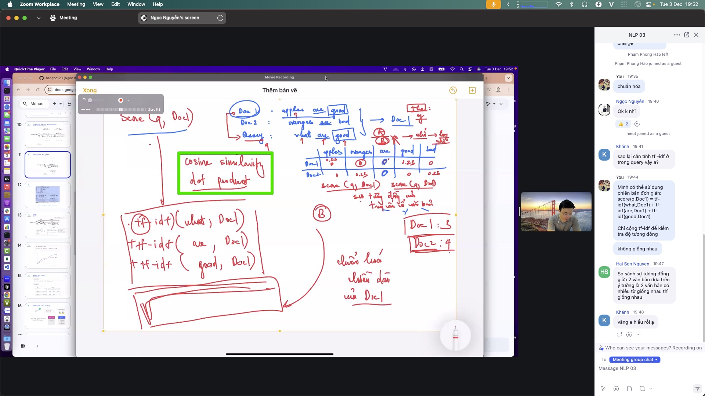
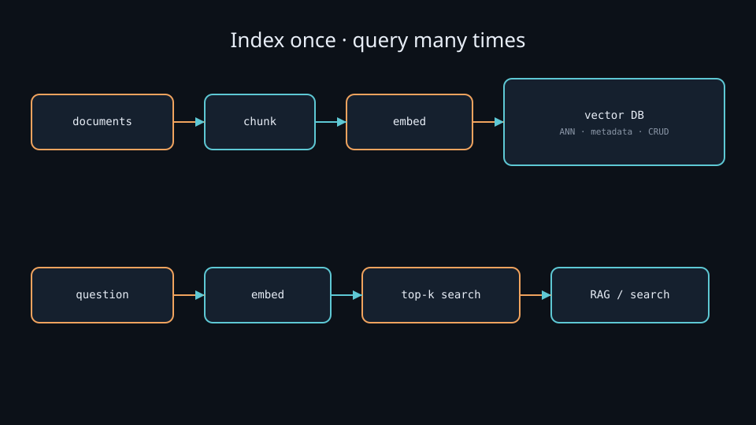

Vector Database
Store vectors and find top-k nearest neighbors (ANN). Infrastructure for RAG and semantic search.
Vector Database
Store millions of embedding vectors and answer “which vectors are closest to this one?” in milliseconds. The infrastructure under RAG and semantic search. Everyday metaphor: a library that shelves books by meaning coordinates, not only by title keywords — and can point to the nearest shelves instantly.
Why it matters
Embedding turns everything into vectors — but where do you store them, and how do you search? Scanning every vector one by one (brute force) is too slow at scale. A vector database stores vectors with their source data and finds top-k nearest neighbors fast via approximate indexes. Without it, RAG and semantic search cannot run at real-world scale.
Key ideas
- Core problem — nearest neighbor: given query
q ∈ ℝ^d, find the k closest vectors by cosine, dot product, or L2 (embedding.md). Brute force is O(N · d) per query — fine for 10k rows, painful at 10M+. - ANN instead of brute force: approximate nearest neighbor indexes trade a little recall for large speedups:
- HNSW (Hierarchical Navigable Small World): multi-layer graph; search walks edges toward the query. Strong default recall/latency; RAM-heavy (graph edges + vectors). Tunables:
M(connections per node),efConstruction/efSearch. - IVF (Inverted File): cluster vectors into
nlistcoarse centroids (k-means); at query time probe onlynprobelists. Good for large N on disk/RAM; needs a training pass on representative vectors. Often paired with PQ (product quantization) to compress vectors. - Flat / brute force: exact search — use for small N or as a recall baseline when tuning ANN.
- More than vectors: each record carries metadata (source, date, tags, ACL) for pre-filtering or post-filtering. Production systems need CRUD, backups, and idempotent upserts when documents change.
- Chunking first: rarely embed a whole book as one vector — split into passages (~200–400 tokens is a common RAG starting point), embed each, store
{chunk_text, vector, source, offsets}together. Too-large chunks blur topics; too-small chunks lose context. - Common choices:
- FAISS — in-memory (or memory-mapped), very fast, excellent for experiments and custom IVF/HNSW/PQ recipes; you own persistence and CRUD.
- Elasticsearch / OpenSearch kNN — HNSW (or other) beside BM25 inverted index — natural fit for hybrid search (semantic-search.md).
- pgvector — Postgres
vectortype + IVFFlat/HNSW; great when relational data already lives in Postgres. - Chroma / Qdrant / Milvus / Weaviate — purpose-built stores with collections, filters, and ops features at different scales.
- Pick by need: scale + hybrid keyword + CRUD → Elastic; pure in-RAM research speed → FAISS; app already on Postgres → pgvector; local demo → Chroma.
- Metric must match training: if embeddings were trained with cosine, search with cosine (or L2-normalize then inner product). Wrong metric → systematically wrong ranking even when ANN recall looks “healthy.”
Worked example (intuition)
1. Split docs into ~200–400 token chunks (e.g. 8,000 chunks from a wiki).
2. encode() each chunk with sentence-transformers → 8000 × 384 float32 (~12 MB vectors).
3. Upsert (vector, text, source, date) into the DB. For FAISS HNSW: build once; for Elastic: index docs with a dense_vector field.
4. On question: embed question (~1–5 ms on GPU for MiniLM) → ANN top-8 with efSearch high enough for stable recall → optional metadata filter (date >= 2024-01-01) → hand chunks to the LLM (rag.md).
5. Metric check: if you indexed raw MiniLM vectors but query with L2 while the model was evaluated with cosine, near-duplicates with large norms can outrank true paraphrases — normalize at write and read, or set the index space to cosine explicitly.
Common pitfalls
- Stale index — docs changed but vectors not re-embedded; RAG cites ghost content.
- Dimension / model mismatch — query encoder ≠ index encoder (384 vs 768 is the obvious crash; same-
ddifferent models is the silent killer). - No metadata filters — retrieving irrelevant years/sources/tenants.
- k too small or too large — miss context, or drown the LLM in noise (and blow the context budget).
- ANN under-tuned — low
efSearch/nprobelooks fast in load tests but drops Recall@10 in eval. - Filter-then-ANN vs ANN-then-filter — aggressive prefilters can empty candidate sets; postfilters can return fewer than k hits.
Illustrations






Deeper dive
- HNSW cost model: build time and RAM grow with
N · M · d. RaisingefSearchfrom 32 → 128 often lifts recall toward flat-search quality with a roughly linear latency hit — measure Recall@10 on a labeled query set, don’t guess. - IVF failure mode: if
nprobeis too small, the true neighbor’s coarse cell is never visited → hard misses. If the IVF train set does not match production traffic (e.g. trained on titles, queries are long questions), list assignment quality tanks. - PQ compression: product quantization can shrink vectors 4–16× with some recall loss — attractive at 100M+ vectors; always A/B against float32 on a gold query set before shipping.
- Metric mismatch examples: (1) cosine-trained SBERT + L2 search; (2) IP index on unnormalized vectors; (3) Elastic
cosinevs FAISSMETRIC_INNER_PRODUCTwithout normalizing. Symptoms: “demo looked great in Notebook cosine_sim, production ranking feels random.” - Latency budget sketch: embed query 2–20 ms + ANN 1–30 ms + fetch payloads 1–10 ms is a common comfortable band for interactive RAG; p99 spikes usually come from cold caches, huge
k, or heavy metadata filters. - CRUD reality: deleting a document means deleting all its chunk vectors; partial updates need stable
chunk_ids. Re-embedding after model upgrade means full reindex, not a hot swap of one row. - Hybrid join: many stacks run BM25 and HNSW separately then fuse scores (RRF — reciprocal rank fusion). Pure vector DB alone will miss exact SKUs/IDs that keyword search catches.
- Recall@k vs latency curve. Plot Recall@10 against
efSearch/nprobeon a fixed gold set; pick the knee that meets your SLA. Shipping “default ANN knobs” without this curve is guessing. - Idempotent upserts. Use stable
chunk_id = hash(source + offsets + model_id). Re-ingesting the same doc should replace vectors, not duplicate neighbors that pollute top-k.
Decision guide
| Situation | Prefer | Avoid / why |
|---|---|---|
| <50k vectors, prototyping | Flat FAISS / Chroma / pgvector exact | Premature IVF/PQ — complexity without gain |
| Millions of vectors, high recall | HNSW (FAISS/Elastic/Qdrant) with tuned efSearch | Tiny efSearch “because it’s fast” — silent recall drop |
| Huge N, RAM-constrained | IVF + PQ (FAISS) or disk-oriented engines | Pure in-RAM HNSW of float32 — OOM |
| Need BM25 + vectors + CRUD | Elasticsearch/OpenSearch kNN | FAISS alone — you will reinvent ops and keyword search |
| App data already in Postgres | pgvector (HNSW/IVFFlat) | Extra DB just for vectors unless scale demands it |
| Cosine-trained embeddings | Cosine space, or normalize + IP | L2 on raw SBERT vectors — ranking distortion |
Case study
Index an internal wiki (~8 000 chunks of 200–400 tokens) for RAG answer support.
- Inputs: markdown pages → chunker → MiniLM 384-d normalized embeddings; metadata
{source, date, product_area}. - Steps: upsert into HNSW (or pgvector/Chroma for the lab) → gold 50 questions with known passages → tune
efSearchuntil Recall@10 ≥ 0.9 vs flat baseline → query path: embed question → ANN top-8 → filterdate >= 2024→ return payloads to the LLM. - Output: interactive retrieve ~10–40 ms ANN + embed; RAG context pack of 8 chunks; ops runbook for full reindex when the embedding model changes.
- What you'd check: dim/metric match at write and read; deleting a page removes all its chunk ids; ANN recall not silently tanked by tiny
efSearch; hybrid BM25 still available for SKU/error-code queries.
Lab checklist
- [ ] Chunk a small document set and embed with a fixed sentence-transformer
- [ ] Insert vectors + metadata into one store (FAISS, Chroma, or pgvector)
- [ ] Query with a paraphrase and inspect top-k texts (not only scores)
- [ ] Compare flat/exact search vs ANN on the same gold queries (Recall@10)
- [ ] Raise/lower
efSearchornprobeand record latency vs recall - [ ] Apply a metadata filter and note empty-result behavior
- [ ] Delete or update one source document and verify stale chunks are gone
- [ ] Write the reindex rule: new embedding model ⇒ rebuild all vectors
Pipeline
documents → chunk → embedding → [vector database]
question → embedding → [vector database: top-k search] → RAG / semantic search
Vector databases receive vectors from embedding.md / sentence-transformers.md and supply top-k results to rag.md and semantic-search.md.
Slides & demo
| Link | |
|---|---|
| Slides | slides/vector-database |
| Related demo | demos/rag |